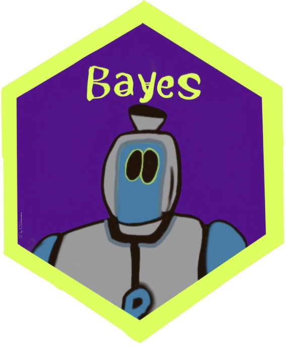

{kind=link}
{kind=link}
flowchart LR M[Sie werfen die Münze] --> T["T (Treffer) 🥳"] M --> N["N (Niete) 📚"]
Start:Bayes!
Hallo, Wahrscheinlichkeit
Sebastian Sauer
Hallo, Wahrscheinlichkeit
Wahrscheinlichkeitstheorie: die Mathematik des Zufalls
Wozu brauche ich dieses Kapitel?
Im wirklichen Leben sind Aussagen so gut wie nie sicher:
- “Weil sie so schlau ist, ist sie erfolgreich.”
- “In Elektroautos liegt die Zukunft.”
- “Das klappt sicher, meine Meinung.”
- “Der nächste Präsident wird XYZ.”
Wahrscheinlichkeit hilft, solche Aussagen zu präzisieren.
Lernziele
Sie können …
- die Grundbegriffe der Wahrscheinlichkeitstheorie erläuternd definieren
- die Definitionen von Wahrscheinlichkeit beschreiben
- typische Relationen (Operationen) von Ereignissen anhand von Beispielen veranschaulichen
- erläutern, was eine Zufallsvariable ist
Grundbegriffe
Zufallsvorgang
Definition: Zufallsvorgang
Ein Zufallsvorgang (Zufallsexperiment) ist eine klar beschriebene Tätigkeit, deren Ergebnis nicht sicher ist. Die Menge möglicher Ergebnisse ist aber bekannt, und die Wahrscheinlichkeit jedes Ergebnisses lässt sich quantifizieren.
Grundbegriffe
Typische Zufallsvorgänge
- Würfeln: Augenzahl 1–6
- Münzwurf: Kopf oder Zahl
- Lottoziehung: 6 aus 49
- Kartenziehen: eine Karte aus 52
- Glücksrad: welches Feld bleibt stehen?
Grundbegriffe
Zufall heißt: unbekannt, nicht ursachenlos
Vorsicht
Zufall heißt nicht, dass ein Vorgang keine Ursachen hätte. Der Fall einer Münze gehorcht den Gesetzen der Gravitation — kennten wir alle Ausgangsbedingungen exakt, wäre er vorhersagbar. “Zufall” versteht man daher besser als “unbekannt”.
Grundbegriffe
Ergebnisraum
Definition: Ergebnisraum
Die möglichen Ergebnisse eines Zufallsvorgangs bilden eine Menge, den Ergebnisraum \(\Omega\). Die Elemente \(\omega\) von \(\Omega\) heißen Ergebnisse.
\[\Omega = \{1,2,3,4,5,6\}\]
Grundbegriffe
Ergebnisraum — Beispiele
- Münzwurf: \(\Omega = \{\text{Kopf, Zahl}\}\)
- Lotto: alle Kombinationen von 6 aus 49 Zahlen (ca. 14 Mio.)
- Kartenziehen: alle 52 Karten
- Glücksrad (4 Farbfelder): \(\Omega = \{\text{Rot, Grün, Blau, Gelb}\}\)
Die Wahrscheinlichkeitsrechnung baut auf der Mengenlehre auf.
Grundbegriffe
Ereignis
Definition: Ereignis
Jede Teilmenge von \(\Omega\) heißt Ereignis: \(A \subseteq \Omega\).
Beispiel: “Augenzahl 6 liegt oben” \(\rightarrow A = \{6\}\)
Grundbegriffe
Unmögliches und sicheres Ereignis
Definition: Unmögliches und sicheres Ereignis
Die leere Menge \(\varnothing\) heißt das unmögliche Ereignis, der Grundraum \(\Omega\) heißt das sichere Ereignis.
- Unmöglich: “Der Würfel zeigt eine 7.”
- Sicher: “Nach dem Wurf liegt eine Zahl zwischen 1 und 6 oben.”
Grundbegriffe
Elementarereignis
Definition: Elementarereignis
Jede einelementige Teilmenge \(\{\omega\}\) von \(\Omega\) heißt Elementarereignis.
- Würfeln: \(A = \{1\}\)
- Klausur: \(\Omega = \{\text{bestehen, nicht bestehen}\}\), ein Elementarereignis tritt ein
Grundbegriffe
Vollständiges Ereignissystem
Definition: Vollständiges Ereignissystem
Wird der Grundraum \(\Omega\) vollständig in paarweise disjunkte Ereignisse zerlegt, so bilden diese Ereignisse ein vollständiges Ereignissystem.
{kind=link}
Beispiel Würfel: \(A\) = gerade Zahlen, \(B\) = ungerade Zahlen
Grundbegriffe
Mächtigkeit
Definition: Mächtigkeit
Die Anzahl der Elementarereignisse eines Ergebnisraums nennt man die Mächtigkeit, Symbol \(|\Omega|\).
Beispiel: Würfel mit \(\Omega = \{1,...,6\}\) hat \(|\Omega| = 6\).
Grundbegriffe
Disjunkte Ereignisse
Zwei Ereignisse \(A\), \(B \subseteq \Omega\) sind disjunkt, wenn ihre Schnittmenge leer ist: \(A \cap B = \emptyset\)
{kind=link}
Beispiel: “gerade Augenzahl” (\(\{2,4,6\}\)) und “ungerade Augenzahl” (\(\{1,3,5\}\))
Grundbegriffe
Was ist Wahrscheinlichkeit?
Von der Logik zur Wahrscheinlichkeit
Klassische Logik: “Alle Schwäne sind weiß.” → “Dies ist ein Schwan.” → “Dieser Schwan ist weiß.”
Mit Wahrscheinlichkeit: “Die meisten Schwäne sind weiß.” → “Dies ist ein Schwan.” → “Dieser Schwan ist wahrscheinlich weiß.”
Wahrscheinlichkeit = Erweiterung der Logik (Jaynes & Bretthorst, 2003)
Was ist Wahrscheinlichkeit?
Wahrscheinlichkeit als Erweiterung der Logik
In formaler Logik: ein Ereignis ist falsch (0) oder wahr (1). Der Raum dazwischen ist die Wahrscheinlichkeit \(0 < p < 1\).
{kind=link}
Was ist Wahrscheinlichkeit?
Definition von Wahrscheinlichkeit
Definition: Wahrscheinlichkeit
Die Wahrscheinlichkeit ist ein Maß für die Plausibilität einer Aussage \(A\), gegeben Hintergrundinformationen \(D\): \(Pr(A|D)\). Sie liegt zwischen 0 (unmöglich) und 1 (sicher).
{kind=link}
Was ist Wahrscheinlichkeit?
Wahrscheinlichkeit als Wissenszustand
Wahrscheinlichkeit existiert nicht wie ein Stein — sie ist eine Art von Wissen (Jaynes & Bretthorst, 2003).
- Unbedarfter Spieler: “Ich habe keinen Grund, an der Fairness zu zweifeln” → \(Pr(Z|F) = 0.5\)
- Betrüger, der die Münze kennt → \(Pr(Z|B) = 0.75\)
Dieselbe Münze, unterschiedliches Wissen, unterschiedliche Wahrscheinlichkeit.
Was ist Wahrscheinlichkeit?
Wahrscheinlichkeit ist immer bedingt
Unvollständig: “Morgen regnet es mit 70 % Wahrscheinlichkeit.”
Besser: \(Pr(\text{Regen} \mid \text{Wettermodell X})\)
Symptome \(S\) eines Hautkrebses: \(Pr(K) = 0{,}001\), aber \(Pr(K \mid S) \gg 0{,}001\)
Hinweis
Sagt jemand “Die Wahrscheinlichkeit von A ist x %”, frag immer: gegeben welcher Annahmen, welcher Evidenz?
Was ist Wahrscheinlichkeit?
Indifferenzprinzip
Definition: Indifferenzprinzip
In Abwesenheit von Informationen, die bestimmte Ereignisse bevorzugen, sollten alle möglichen Ereignisse als gleich wahrscheinlich angesehen werden.
\[Pr(A) = \frac{1}{n} = \frac{1}{|\Omega|}\]
Beispiel: \(Pr(\text{6 beim Würfeln}) = 1/6\)
Was ist Wahrscheinlichkeit?
Laplace-Experiment
Definition: Laplace-Experiment
Ein Zufallsexperiment, bei dem alle Elementarereignisse dieselbe Wahrscheinlichkeit haben, nennt man Laplace-Experiment.
\[Pr(A)=\frac{\text{Anzahl Treffer}}{\text{Anzahl möglicher Ergebnisse}}\]
Was ist Wahrscheinlichkeit?
Frequentistische Definition
Wenn Elementarereignisse nicht gleichwahrscheinlich sind: einfach ausprobieren.
Ein (angeblich fairer) Würfel wird 1000-mal geworfen — Anteil der 6 beobachten:
{kind=link}
Was ist Wahrscheinlichkeit?
Kolmogorovs Axiome
- Nichtnegativität: Wahrscheinlichkeiten sind nie negativ
- Normierung: \(Pr(\Omega) = 1\), \(Pr(\emptyset) = 0\)
- Additivität: Sind \(A\), \(B\) disjunkt, gilt \(Pr(A \cup B) = Pr(A) + Pr(B)\)
Was ist Wahrscheinlichkeit?
Relationen von Ereignissen
Relationen im Überblick
Definition: Relation
Eine Relation zweier Ereignisse bezeichnet die Beziehung, in der die beiden Ereignisse zueinander stehen.
Typische Relationen: Gleichheit, Ungleichheit, Vereinigung, Schnitt
Werkzeug zur Veranschaulichung: Venn-Diagramme
Relationen von Ereignissen
Vereinigung von Ereignissen
Definition: Vereinigung von Ereignissen
\(C = A \cup B\) besteht aus allen Elementarereignissen von \(A\) oder \(B\).
{kind=link}
R: union(A, B)
Relationen von Ereignissen
(Durch-)Schnitt von Ereignissen
Definition: Schnittmenge von Ereignissen
\(A \cap B\) umfasst genau die Elementarereignisse, die Teil beider Ereignisse sind (“A und B”).
{kind=link}
R: intersect(A, B)
Relationen von Ereignissen
Eselsbrücke: Vereinigung vs. Schnitt

Relationen von Ereignissen
Komplementärereignis
Definition: Komplementärereignis
\(B\) ist Komplementärereignis zu \(A\), wenn es genau die Elementarereignisse von \(\Omega\) umfasst, die nicht zu \(A\) gehören: \(\bar{A}\) oder \(\neg A\).
{kind=link}
Beispiel: \(A\) = “gerade Augenzahl” → \(\neg A\) = “ungerade Augenzahl”
Relationen von Ereignissen
Logische Differenz
Definition: Logische Differenz
\(A \setminus B\) besteht aus den Elementarereignissen von \(A\), die nicht zugleich in \(B\) sind (“A minus B”).
{kind=link}
Vorsicht
\(A \setminus B \ne B \setminus A\) — Achtung, Asymmetrie! R: setdiff(A, B)
Relationen von Ereignissen
Zufallsvariable
Von Ereignissen zu Zahlen
Definition: Zufallsvariable
Die Zuordnung der Elementarereignisse eines Zufallsexperiments zu genau einer Zahl \(\in \mathbb{R}\) nennt man Zufallsvariable.
{kind=link}
Schreibweise: \(X: \Omega \rightarrow \mathbb{R}\)
Zufallsvariable
Diskrete Zufallsvariable
Definition
Bei einer diskreten Zufallsvariablen sind nur bestimmte Realisationen möglich (meist natürliche Zahlen: 0, 1, 2, …).
- Anzahl Bewerbungen bis zum ersten Interview
- Anzahl Anläufe bis zum Bestehen der Klausur
- Anzahl Treffer beim Losekauf
{kind=link}
Zufallsvariable
Wahrscheinlichkeitsverteilung & Verteilungsfunktion
Eine Wahrscheinlichkeitsverteilung ordnet jeder Realisation einer Zufallsvariablen eine Wahrscheinlichkeit zu.
\[F(x) = \sum_{x_i \le x} Pr(X=x_i)\]
Definition: Verteilungsfunktion
\(F\) gibt die Wahrscheinlichkeit an, dass \(X\) eine Realisation \(\le x\) annimmt.
{kind=link}
Zufallsvariable
Stetige Zufallsvariable
Definition: Stetige Zufallsvariable
Eine stetige Zufallsvariable gleicht einer diskreten, nur dass alle Werte in einem Intervall erlaubt sind.
Beispiele: Spritverbrauch, Körpergewicht, Schnabellängen, Blitzer-Geschwindigkeit
Zufallsvariable
Beispiel: Warten auf den Bus
Wartezeit gleichverteilt zwischen 0 und 10 Minuten.
- \(Pr(X = 42\text{s exakt}) \approx 0\) — die Fläche eines Punktes ist Null
- \(Pr(0 < X < 5\text{ Min}) = 50\,\%\)
{kind=link}
Zufallsvariable
Wahrscheinlichkeitsdichte
Definition: Wahrscheinlichkeitsdichte
Die Dichte \(f(x)\) gibt an, wie viel Wahrscheinlichkeitsmasse pro Einheit von \(X\) an der Stelle \(x\) liegt.
{kind=link}
Für stetige \(X\): \(Pr(X = x_j) = 0\) für jedes einzelne \(x_j\) — praktisch relevant sind Intervalle.
Zufallsvariable
Zusammenfassung
- Zufallsvorgang, Ergebnisraum \(\Omega\), Ereignis \(A \subseteq \Omega\)
- Wahrscheinlichkeit: Maß für Plausibilität, immer bedingt auf Hintergrundwissen
- Indifferenzprinzip, Laplace, frequentistischer Zugang, Kolmogorov-Axiome
- Relationen: Vereinigung, Schnitt, Komplement, Differenz
- Zufallsvariable: diskret vs. stetig, Verteilung, Dichte
Zufallsvariable
Vielen Dank!
Fragen?
Zufallsvariable
Jaynes, E. T., & Bretthorst, G. L. (2003). Probability Theory: The Logic of Science. Cambridge University Press.

Start:Bayes! — Hallo, Wahrscheinlichkeit